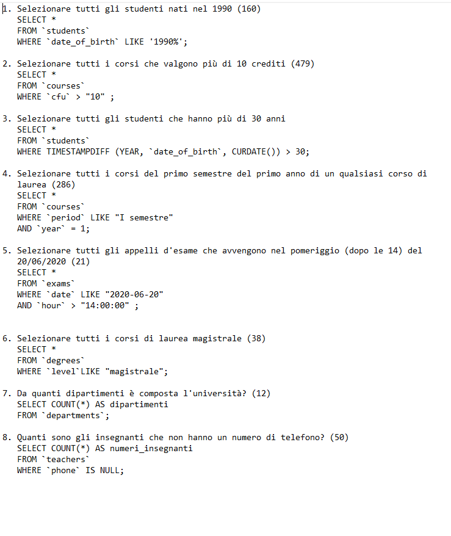
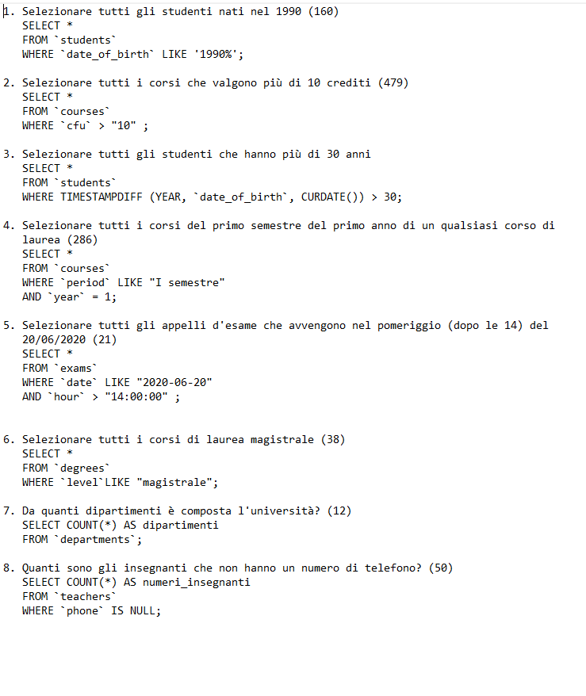

esercizio 22/03/2022,

esercizio 22/03/2022,

1. Contare quanti iscritti ci sono stati ogni anno
SELECT COUNT(*) AS "numer0_studenti", YEAR(`enrolment_date`) AS `anno_scolastico`
FROM `students`
Group BY `anno_scolastico`;
2. Contare gli insegnanti che hanno l'ufficio nello stesso edificio
SELECT COUNT(*) AS `numero_insegnanti`, `office_address`
FROM `teachers`
Group BY `office_address`;
3. Calcolare la media dei voti di ogni appello d'esame
SELECT AVG(`vote`) AS media_voti, `exam_id`
FROM `exam_student`
Group BY `exam_id`;
4. Contare quanti corsi di laurea ci sono per ogni dipartimento
SELECT COUNT(`id`) AS `numero_corsi`, `department_id`
FROM `degrees`
Group BY `department_id`;
1. Selezionare tutti gli studenti iscritti al Corso di Laurea in Economia
SELECT `student`.`name`, `students`.`surname`, `degrees`.`name`
FROM `students`
JOIN `degrees`
ON `degrees`.`id`=`students`.`degree_id`
WHERE `degrees`.`name`= "corso di laurea in economia";
2. Selezionare tutti i Corsi di Laurea del Dipartimento di Neuroscienze
SELECT *
FROM `departments`
JOIN `degrees`
ON `departments`.`id`=`degrees`.`departments`
WHERE `departments`.`name` LIKE "dipartimento i neuroscienza";
3. Selezionare tutti i corsi in cui insegna Fulvio Amato (id=44)
SELECT `teachers`.`id`, `teachers`.`name`, `teachers`.`surname`,`courses`.`name` as "corso"
FROM `teachers`
JOIN `course_teacher`
ON `teacher`.`id`=`course_teacher`.`teacher`.`id`
JOIN `courses`
ON `courses_teacher`.`courses_id`=`course_id`
WHERE `teachers`.`name` = "Fulvio"
AND `teachers`.`surname`= "Amato";
4. Selezionare tutti gli studenti con i dati relativi al corso di laurea a cui sono iscritti e il
relativo dipartimento, in ordine alfabetico per cognome e nome
SELECT `students`.`name`, `students`.`surname`, AS "cognome", `degrees`.`name` AS "nome_corso", `departments`.`name` AS "nome_dipartimento"
FROM `students`
JOIN `degrees`
ON `students`.`degrees_id`=`degrees`.`id`
JOIN `departments`
ON `degrees`.`department_id`=`departments`.`id`
ORDER BY `cognome` ASC,`nome`ASC;
5. Selezionare tutti i corsi di laurea con i relativi corsi e insegnanti
SELECT `teachers`.`id` AS `id_insegnante`,`degrees`.`name` AS `degree`, `teachers`.`name` AS `prof_name`, `teachers`.`surname` AS `prof_surname`,`courses`.`name` AS `course`
FROM `degrees`
JOIN `courses`
ON `courses`.`degree_id`=`degrees`.`id`
JOIN `course_teacher`
ON `course_teacher`.`course_id`=`courses`.`id`
JOIN `teachers`
ON `course_teacher`.`teacher_id`=`teacher`.`id`
ORDER BY `prof_surname` ASC;
6. Selezionare tutti i docenti che insegnano nel Dipartimento di Matematica (54)
SELECT DISTINCT `teachers`.`name` AS "nome_insegnante", `teachers`.`surname` AS "cognome_insegnante", `departments`.`name` AS "nome_dipartimento"
FROM `teachers`
JOIN `course_teacher`
ON `course_teacher`.`teacher_id`=`teachers`.`id`
JOIN `courses`
ON `courses`.`id`=`course_teacher`.`course_id`
JOIN `degrees`
ON `degrees`.`id`=`courses`.`degree_id`
JOIN `departments`
ON `departments`.`id`=`degrees`.`departments_id`
WHERE `departments`.`name` = "dipartimento di matematica";
7. BONUS: Selezionare per ogni studente quanti tentativi d’esame ha sostenuto per
superare ciascuno dei suoi esami
SELECT COUNT(`exam_student`.`exam_id`) AS `tentativi`, MAX(`exam_student`.`vote`) AS `voto_massimo`, `students`.`name` AS `nome_studente`,`students`.`surname` AS `cognome_studente`,`courses`.`name` AS `corso`
FROM `exam_student`
JOIN `exam`
ON `exam_student`.`exam_id`=`exam`.`id`
JOIN `courses`
ON `courses`.`id`=`exam`.`courses_id`
JOIN `students`
ON `exam_student`.`student_id`=`students`.`id`
GROUP BY `students`.`id`, `courses`.`id`
HAVING `voto_massimo` >= 18;